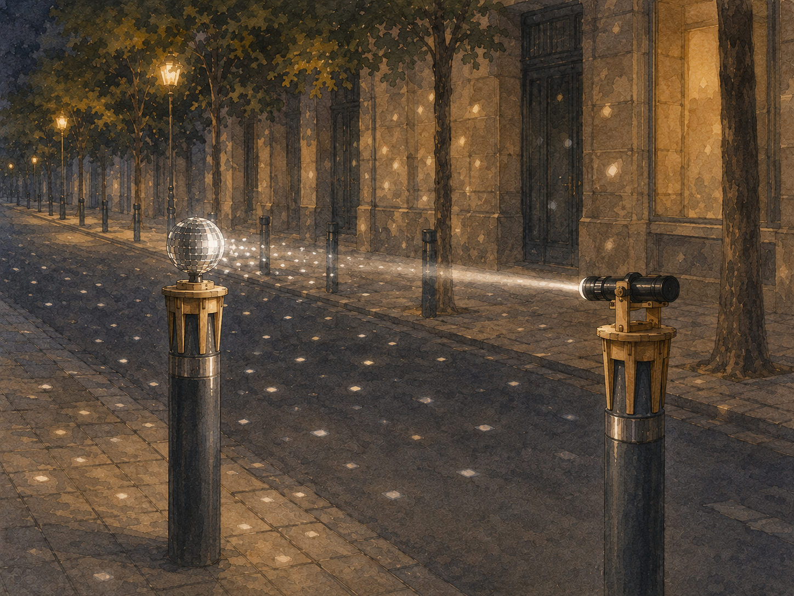
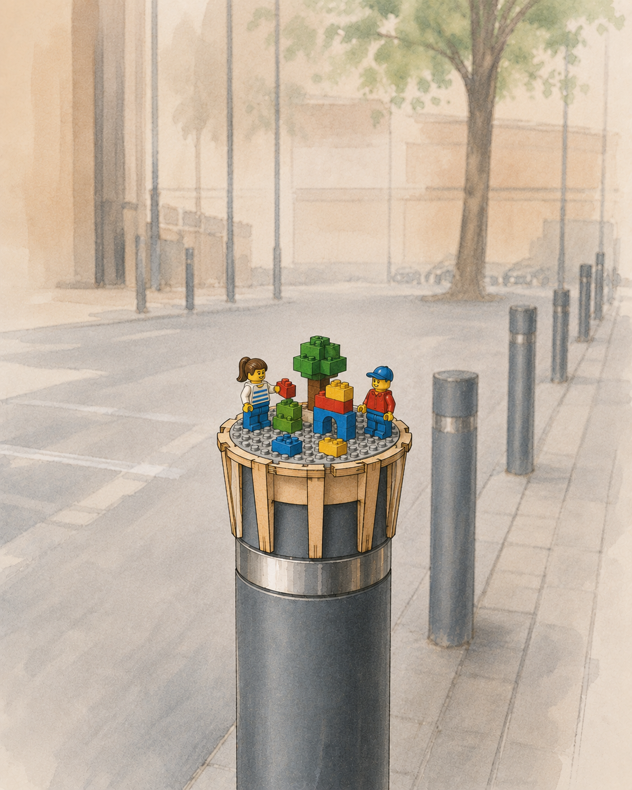
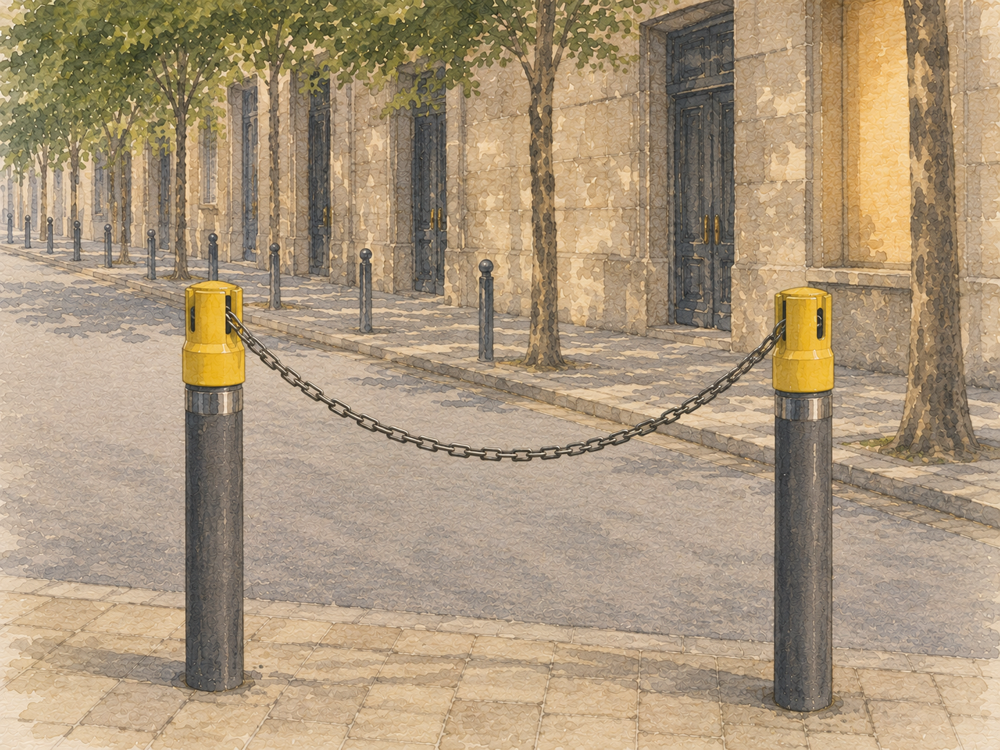

Photographed as found · Camp d'en Grassot i Gràcia Nova, Barcelona
Specimen SPC-016
Common Barcelona Pylon/Bollard (Fabregas)
Materials
Rust inhibited metal with reflective chrome band
Measurements
8.5 cm diameter, 12 cm cap height, 3 cm chrome band height, 79 cm total height
Notes
Chrome band is inset slightly allowing for designs to possibly cinch or bite or strap for securing. Fabregas product number C-43-CH: https://grupfabregas.com/en/product/pilona-barcelona-92/
Branches
5 concepts filed against this specimen

CON-019 · branch of SPC-016
Motorized Mini Disco Ball and Spotlight Combo. Positionable spotlight/flashlight holder. Use for block parties, special neighborhood events, store openings. Pair multiple spotlights/flashlights nearby for more disco ball reflections.
ChallengeNeeds small, battery powered gearbox motor to drive the disco ball, ideally with some form of speed control. Where to find disco ball. Flashlight need beam that can focus.
Blocks
None
Materials
Lasercut plywood, gearbox motor, battery, disco ball, flashlight. Though if this is only meant to be used temporarily during the night (no need for heat resistance or UV durability), a 3D printable design would be possible and maybe preferable.

CON-018 · branch of SPC-016
A simple platform with a LEGO layer where neighborhood kids can add to and modify the scene.
ChallengeWill need to research LEGO layer dimensions to see what will fit. I expect the piece will need to be epoxied to the lasercut base. Not sure how to prevent kids from stealing or generally coveting the LEGO. Maybe better as an easter egg somewhere secluded, or near a children's park away from cars and traffic dangers.
Blocks
LEGO dimensions
Materials
Lasercut wood, LEGO, PVA glue, epoxy

CON-020 · branch of SPC-016
A Topper with 4 Slots to Hold or Combine Chain
ChallengeCreate an easily deployable way for communities to block/discourage traffic when needed by placing high visibility chain between two posts. Also useful as a guard chain along a series of posts to discourage people from wandering into the street. Removable cap prevents chain from easily being removed but does allow relatively quick access. Commercial versions of this design already exist. We just mean to produce a DIY version that's easy to replicate and made for Barcelona's specific common bollard dimensions.
Blocks
Tricky to construct using laser cut techniques, except maybe using a square design and UV/heat resistant plastics.
Materials
Worth trying a 3D printed version and plastic chain. Resilient version would need to be milled from HDPE or PVC, or cast aluminum. Maybe cast from mycelium in 3D printed molds for lightweight use.

CON-017 · branch of SPC-016
Pillar Planter. A holder that supports a standard size potted plant on top of the pillar.
ChallengeWater drainage, materials that resist water damage and rot, accommodating different sizes of plant pot.
Blocks
None.
Materials
Plywood or expanded PVC or aluminum.

CON-016 · branch of SPC-016
Add an inexpensive, lasercut birdhouse that friction-fits to the top of the pillar. Easy to maintain, easy to remove.
ChallengeMake an urban space more inviting to wildlife
Blocks
May invite rodents. May be misused as an ashtray.
Materials
laser cut plywood, thin PVA glue

Maker Project Lab
Barcelona field archive
Barcelona field archive